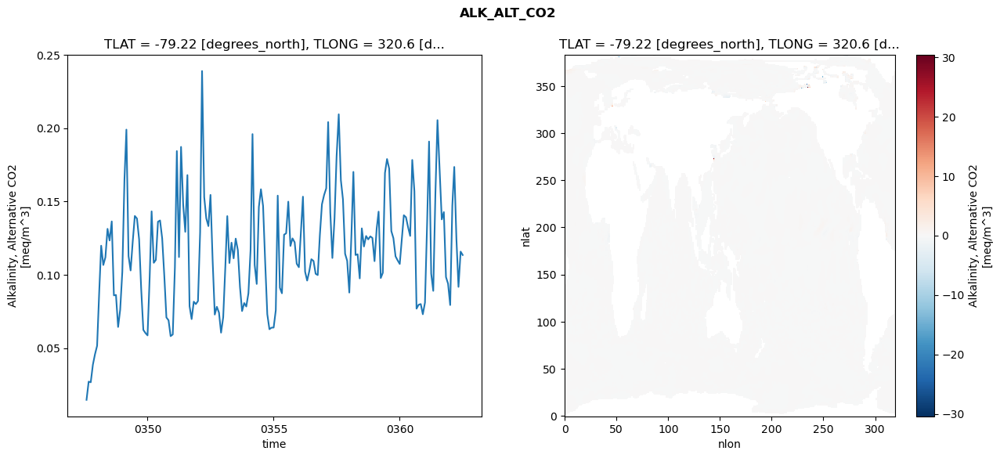
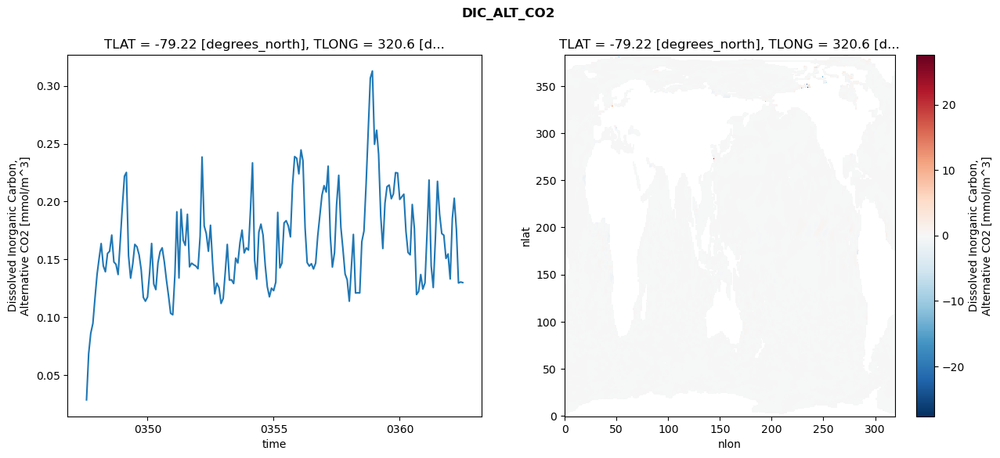
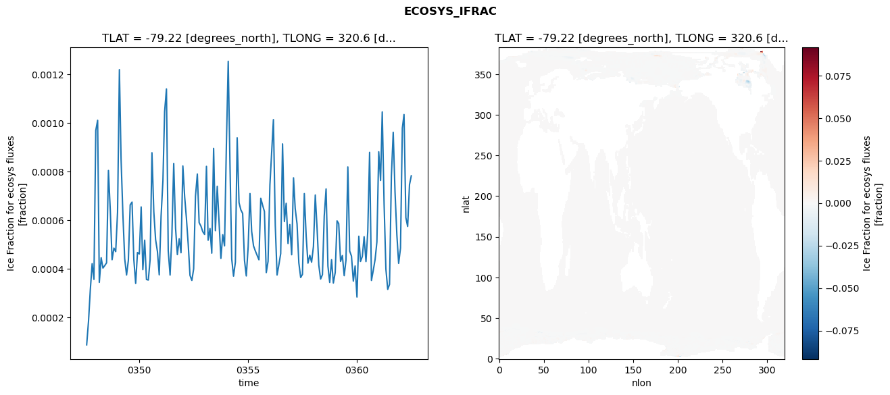
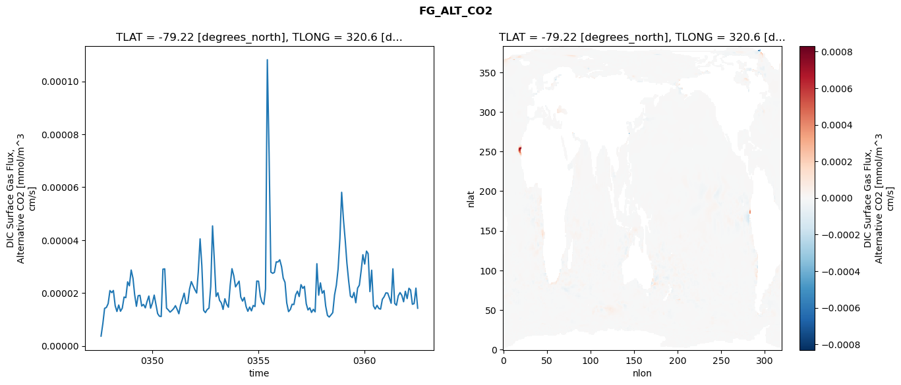

glb-dor_North_Atlantic_basin_031_1999-07-01_00126#
Simulation details#
Case: smyle.cdr-atlas-v0.glb-dor_North_Atlantic_basin_031_1999-07-01_00126.001
Basin: North_Atlantic_basin
Polygon: 31.0
Start date: 1999-07
Show code cell source Hide code cell source
import xarray as xr
import matplotlib.pyplot as plt
Show code cell source Hide code cell source
zarr_store = "/path/to/zarr/store"
# Parameters
zarr_store = "/global/cfs/projectdirs/m4746/Projects/Ocean-CDR-Atlas-v0/data/validation/smyle.cdr-atlas-v0.glb-dor_North_Atlantic_basin_031_1999-07-01_00126.001.validation.zarr"
Show code cell source Hide code cell source
%%time
ds_o = xr.open_zarr(zarr_store).compute()
ds_o
CPU times: user 629 ms, sys: 444 ms, total: 1.07 s
Wall time: 1.34 s
<xarray.Dataset> Size: 2MB
Dimensions: (nlat: 384, nlon: 320, time: 180)
Coordinates:
TLAT float64 8B -79.22
TLONG float64 8B 320.6
ULAT float64 8B -78.95
ULONG float64 8B 321.1
* time (time) object 1kB 0347-08-01 00:00:00 ... 0362-07-01 0...
z_t float32 4B 500.0
Dimensions without coordinates: nlat, nlon
Data variables:
ALK_ALT_CO2_diff (nlat, nlon) float32 492kB nan nan nan ... nan nan nan
ALK_ALT_CO2_rmse (time) float64 1kB 0.01465 0.0271 ... 0.1158 0.1134
DIC_ALT_CO2_diff (nlat, nlon) float32 492kB nan nan nan ... nan nan nan
DIC_ALT_CO2_rmse (time) float64 1kB 0.02858 0.06854 ... 0.1304 0.13
ECOSYS_IFRAC_diff (nlat, nlon) float32 492kB nan nan nan ... nan nan nan
ECOSYS_IFRAC_rmse (time) float64 1kB 8.734e-05 0.0001843 ... 0.0007832
FG_ALT_CO2_diff (nlat, nlon) float32 492kB nan nan nan ... nan nan nan
FG_ALT_CO2_rmse (time) float64 1kB 3.702e-06 8.439e-06 ... 1.425e-05xarray.Dataset
- nlat: 384
- nlon: 320
- time: 180
- TLAT()float64-79.22
- long_name :
- array of t-grid latitudes
- units :
- degrees_north
array(-79.22052261)
- TLONG()float64320.6
- long_name :
- array of t-grid longitudes
- units :
- degrees_east
array(320.56250892)
- ULAT()float64-78.95
- long_name :
- array of u-grid latitudes
- units :
- degrees_north
array(-78.95289509)
- ULONG()float64321.1
- long_name :
- array of u-grid longitudes
- units :
- degrees_east
array(321.12500894)
- time(time)object0347-08-01 00:00:00 ... 0362-07-...
- bounds :
- time_bound
- long_name :
- time
array([cftime.DatetimeNoLeap(347, 8, 1, 0, 0, 0, 0, has_year_zero=True), cftime.DatetimeNoLeap(347, 9, 1, 0, 0, 0, 0, has_year_zero=True), cftime.DatetimeNoLeap(347, 10, 1, 0, 0, 0, 0, has_year_zero=True), cftime.DatetimeNoLeap(347, 11, 1, 0, 0, 0, 0, has_year_zero=True), cftime.DatetimeNoLeap(347, 12, 1, 0, 0, 0, 0, has_year_zero=True), cftime.DatetimeNoLeap(348, 1, 1, 0, 0, 0, 0, has_year_zero=True), cftime.DatetimeNoLeap(348, 2, 1, 0, 0, 0, 0, has_year_zero=True), cftime.DatetimeNoLeap(348, 3, 1, 0, 0, 0, 0, has_year_zero=True), cftime.DatetimeNoLeap(348, 4, 1, 0, 0, 0, 0, has_year_zero=True), cftime.DatetimeNoLeap(348, 5, 1, 0, 0, 0, 0, has_year_zero=True), cftime.DatetimeNoLeap(348, 6, 1, 0, 0, 0, 0, has_year_zero=True), cftime.DatetimeNoLeap(348, 7, 1, 0, 0, 0, 0, has_year_zero=True), cftime.DatetimeNoLeap(348, 8, 1, 0, 0, 0, 0, has_year_zero=True), cftime.DatetimeNoLeap(348, 9, 1, 0, 0, 0, 0, has_year_zero=True), cftime.DatetimeNoLeap(348, 10, 1, 0, 0, 0, 0, has_year_zero=True), cftime.DatetimeNoLeap(348, 11, 1, 0, 0, 0, 0, has_year_zero=True), cftime.DatetimeNoLeap(348, 12, 1, 0, 0, 0, 0, has_year_zero=True), cftime.DatetimeNoLeap(349, 1, 1, 0, 0, 0, 0, has_year_zero=True), cftime.DatetimeNoLeap(349, 2, 1, 0, 0, 0, 0, has_year_zero=True), cftime.DatetimeNoLeap(349, 3, 1, 0, 0, 0, 0, has_year_zero=True), cftime.DatetimeNoLeap(349, 4, 1, 0, 0, 0, 0, has_year_zero=True), cftime.DatetimeNoLeap(349, 5, 1, 0, 0, 0, 0, has_year_zero=True), cftime.DatetimeNoLeap(349, 6, 1, 0, 0, 0, 0, has_year_zero=True), cftime.DatetimeNoLeap(349, 7, 1, 0, 0, 0, 0, has_year_zero=True), cftime.DatetimeNoLeap(349, 8, 1, 0, 0, 0, 0, has_year_zero=True), cftime.DatetimeNoLeap(349, 9, 1, 0, 0, 0, 0, has_year_zero=True), cftime.DatetimeNoLeap(349, 10, 1, 0, 0, 0, 0, has_year_zero=True), cftime.DatetimeNoLeap(349, 11, 1, 0, 0, 0, 0, has_year_zero=True), cftime.DatetimeNoLeap(349, 12, 1, 0, 0, 0, 0, has_year_zero=True), cftime.DatetimeNoLeap(350, 1, 1, 0, 0, 0, 0, has_year_zero=True), cftime.DatetimeNoLeap(350, 2, 1, 0, 0, 0, 0, has_year_zero=True), cftime.DatetimeNoLeap(350, 3, 1, 0, 0, 0, 0, has_year_zero=True), cftime.DatetimeNoLeap(350, 4, 1, 0, 0, 0, 0, has_year_zero=True), cftime.DatetimeNoLeap(350, 5, 1, 0, 0, 0, 0, has_year_zero=True), cftime.DatetimeNoLeap(350, 6, 1, 0, 0, 0, 0, has_year_zero=True), cftime.DatetimeNoLeap(350, 7, 1, 0, 0, 0, 0, has_year_zero=True), cftime.DatetimeNoLeap(350, 8, 1, 0, 0, 0, 0, has_year_zero=True), cftime.DatetimeNoLeap(350, 9, 1, 0, 0, 0, 0, has_year_zero=True), cftime.DatetimeNoLeap(350, 10, 1, 0, 0, 0, 0, has_year_zero=True), cftime.DatetimeNoLeap(350, 11, 1, 0, 0, 0, 0, has_year_zero=True), cftime.DatetimeNoLeap(350, 12, 1, 0, 0, 0, 0, has_year_zero=True), cftime.DatetimeNoLeap(351, 1, 1, 0, 0, 0, 0, has_year_zero=True), cftime.DatetimeNoLeap(351, 2, 1, 0, 0, 0, 0, has_year_zero=True), cftime.DatetimeNoLeap(351, 3, 1, 0, 0, 0, 0, has_year_zero=True), cftime.DatetimeNoLeap(351, 4, 1, 0, 0, 0, 0, has_year_zero=True), cftime.DatetimeNoLeap(351, 5, 1, 0, 0, 0, 0, has_year_zero=True), cftime.DatetimeNoLeap(351, 6, 1, 0, 0, 0, 0, has_year_zero=True), cftime.DatetimeNoLeap(351, 7, 1, 0, 0, 0, 0, has_year_zero=True), cftime.DatetimeNoLeap(351, 8, 1, 0, 0, 0, 0, has_year_zero=True), cftime.DatetimeNoLeap(351, 9, 1, 0, 0, 0, 0, has_year_zero=True), cftime.DatetimeNoLeap(351, 10, 1, 0, 0, 0, 0, has_year_zero=True), cftime.DatetimeNoLeap(351, 11, 1, 0, 0, 0, 0, has_year_zero=True), cftime.DatetimeNoLeap(351, 12, 1, 0, 0, 0, 0, has_year_zero=True), cftime.DatetimeNoLeap(352, 1, 1, 0, 0, 0, 0, has_year_zero=True), cftime.DatetimeNoLeap(352, 2, 1, 0, 0, 0, 0, has_year_zero=True), cftime.DatetimeNoLeap(352, 3, 1, 0, 0, 0, 0, has_year_zero=True), cftime.DatetimeNoLeap(352, 4, 1, 0, 0, 0, 0, has_year_zero=True), cftime.DatetimeNoLeap(352, 5, 1, 0, 0, 0, 0, has_year_zero=True), cftime.DatetimeNoLeap(352, 6, 1, 0, 0, 0, 0, has_year_zero=True), cftime.DatetimeNoLeap(352, 7, 1, 0, 0, 0, 0, has_year_zero=True), cftime.DatetimeNoLeap(352, 8, 1, 0, 0, 0, 0, has_year_zero=True), cftime.DatetimeNoLeap(352, 9, 1, 0, 0, 0, 0, has_year_zero=True), cftime.DatetimeNoLeap(352, 10, 1, 0, 0, 0, 0, has_year_zero=True), cftime.DatetimeNoLeap(352, 11, 1, 0, 0, 0, 0, has_year_zero=True), cftime.DatetimeNoLeap(352, 12, 1, 0, 0, 0, 0, has_year_zero=True), cftime.DatetimeNoLeap(353, 1, 1, 0, 0, 0, 0, has_year_zero=True), cftime.DatetimeNoLeap(353, 2, 1, 0, 0, 0, 0, has_year_zero=True), cftime.DatetimeNoLeap(353, 3, 1, 0, 0, 0, 0, has_year_zero=True), cftime.DatetimeNoLeap(353, 4, 1, 0, 0, 0, 0, has_year_zero=True), cftime.DatetimeNoLeap(353, 5, 1, 0, 0, 0, 0, has_year_zero=True), cftime.DatetimeNoLeap(353, 6, 1, 0, 0, 0, 0, has_year_zero=True), cftime.DatetimeNoLeap(353, 7, 1, 0, 0, 0, 0, has_year_zero=True), cftime.DatetimeNoLeap(353, 8, 1, 0, 0, 0, 0, has_year_zero=True), cftime.DatetimeNoLeap(353, 9, 1, 0, 0, 0, 0, has_year_zero=True), cftime.DatetimeNoLeap(353, 10, 1, 0, 0, 0, 0, has_year_zero=True), cftime.DatetimeNoLeap(353, 11, 1, 0, 0, 0, 0, has_year_zero=True), cftime.DatetimeNoLeap(353, 12, 1, 0, 0, 0, 0, has_year_zero=True), cftime.DatetimeNoLeap(354, 1, 1, 0, 0, 0, 0, has_year_zero=True), cftime.DatetimeNoLeap(354, 2, 1, 0, 0, 0, 0, has_year_zero=True), cftime.DatetimeNoLeap(354, 3, 1, 0, 0, 0, 0, has_year_zero=True), cftime.DatetimeNoLeap(354, 4, 1, 0, 0, 0, 0, has_year_zero=True), cftime.DatetimeNoLeap(354, 5, 1, 0, 0, 0, 0, has_year_zero=True), cftime.DatetimeNoLeap(354, 6, 1, 0, 0, 0, 0, has_year_zero=True), cftime.DatetimeNoLeap(354, 7, 1, 0, 0, 0, 0, has_year_zero=True), cftime.DatetimeNoLeap(354, 8, 1, 0, 0, 0, 0, has_year_zero=True), cftime.DatetimeNoLeap(354, 9, 1, 0, 0, 0, 0, has_year_zero=True), cftime.DatetimeNoLeap(354, 10, 1, 0, 0, 0, 0, has_year_zero=True), cftime.DatetimeNoLeap(354, 11, 1, 0, 0, 0, 0, has_year_zero=True), cftime.DatetimeNoLeap(354, 12, 1, 0, 0, 0, 0, has_year_zero=True), cftime.DatetimeNoLeap(355, 1, 1, 0, 0, 0, 0, has_year_zero=True), cftime.DatetimeNoLeap(355, 2, 1, 0, 0, 0, 0, has_year_zero=True), cftime.DatetimeNoLeap(355, 3, 1, 0, 0, 0, 0, has_year_zero=True), cftime.DatetimeNoLeap(355, 4, 1, 0, 0, 0, 0, has_year_zero=True), cftime.DatetimeNoLeap(355, 5, 1, 0, 0, 0, 0, has_year_zero=True), cftime.DatetimeNoLeap(355, 6, 1, 0, 0, 0, 0, has_year_zero=True), cftime.DatetimeNoLeap(355, 7, 1, 0, 0, 0, 0, has_year_zero=True), cftime.DatetimeNoLeap(355, 8, 1, 0, 0, 0, 0, has_year_zero=True), cftime.DatetimeNoLeap(355, 9, 1, 0, 0, 0, 0, has_year_zero=True), cftime.DatetimeNoLeap(355, 10, 1, 0, 0, 0, 0, has_year_zero=True), cftime.DatetimeNoLeap(355, 11, 1, 0, 0, 0, 0, has_year_zero=True), cftime.DatetimeNoLeap(355, 12, 1, 0, 0, 0, 0, has_year_zero=True), cftime.DatetimeNoLeap(356, 1, 1, 0, 0, 0, 0, has_year_zero=True), cftime.DatetimeNoLeap(356, 2, 1, 0, 0, 0, 0, has_year_zero=True), cftime.DatetimeNoLeap(356, 3, 1, 0, 0, 0, 0, has_year_zero=True), cftime.DatetimeNoLeap(356, 4, 1, 0, 0, 0, 0, has_year_zero=True), cftime.DatetimeNoLeap(356, 5, 1, 0, 0, 0, 0, has_year_zero=True), cftime.DatetimeNoLeap(356, 6, 1, 0, 0, 0, 0, has_year_zero=True), cftime.DatetimeNoLeap(356, 7, 1, 0, 0, 0, 0, has_year_zero=True), cftime.DatetimeNoLeap(356, 8, 1, 0, 0, 0, 0, has_year_zero=True), cftime.DatetimeNoLeap(356, 9, 1, 0, 0, 0, 0, has_year_zero=True), cftime.DatetimeNoLeap(356, 10, 1, 0, 0, 0, 0, has_year_zero=True), cftime.DatetimeNoLeap(356, 11, 1, 0, 0, 0, 0, has_year_zero=True), cftime.DatetimeNoLeap(356, 12, 1, 0, 0, 0, 0, has_year_zero=True), cftime.DatetimeNoLeap(357, 1, 1, 0, 0, 0, 0, has_year_zero=True), cftime.DatetimeNoLeap(357, 2, 1, 0, 0, 0, 0, has_year_zero=True), cftime.DatetimeNoLeap(357, 3, 1, 0, 0, 0, 0, has_year_zero=True), cftime.DatetimeNoLeap(357, 4, 1, 0, 0, 0, 0, has_year_zero=True), cftime.DatetimeNoLeap(357, 5, 1, 0, 0, 0, 0, has_year_zero=True), cftime.DatetimeNoLeap(357, 6, 1, 0, 0, 0, 0, has_year_zero=True), cftime.DatetimeNoLeap(357, 7, 1, 0, 0, 0, 0, has_year_zero=True), cftime.DatetimeNoLeap(357, 8, 1, 0, 0, 0, 0, has_year_zero=True), cftime.DatetimeNoLeap(357, 9, 1, 0, 0, 0, 0, has_year_zero=True), cftime.DatetimeNoLeap(357, 10, 1, 0, 0, 0, 0, has_year_zero=True), cftime.DatetimeNoLeap(357, 11, 1, 0, 0, 0, 0, has_year_zero=True), cftime.DatetimeNoLeap(357, 12, 1, 0, 0, 0, 0, has_year_zero=True), cftime.DatetimeNoLeap(358, 1, 1, 0, 0, 0, 0, has_year_zero=True), cftime.DatetimeNoLeap(358, 2, 1, 0, 0, 0, 0, has_year_zero=True), cftime.DatetimeNoLeap(358, 3, 1, 0, 0, 0, 0, has_year_zero=True), cftime.DatetimeNoLeap(358, 4, 1, 0, 0, 0, 0, has_year_zero=True), cftime.DatetimeNoLeap(358, 5, 1, 0, 0, 0, 0, has_year_zero=True), cftime.DatetimeNoLeap(358, 6, 1, 0, 0, 0, 0, has_year_zero=True), cftime.DatetimeNoLeap(358, 7, 1, 0, 0, 0, 0, has_year_zero=True), cftime.DatetimeNoLeap(358, 8, 1, 0, 0, 0, 0, has_year_zero=True), cftime.DatetimeNoLeap(358, 9, 1, 0, 0, 0, 0, has_year_zero=True), cftime.DatetimeNoLeap(358, 10, 1, 0, 0, 0, 0, has_year_zero=True), cftime.DatetimeNoLeap(358, 11, 1, 0, 0, 0, 0, has_year_zero=True), cftime.DatetimeNoLeap(358, 12, 1, 0, 0, 0, 0, has_year_zero=True), cftime.DatetimeNoLeap(359, 1, 1, 0, 0, 0, 0, has_year_zero=True), cftime.DatetimeNoLeap(359, 2, 1, 0, 0, 0, 0, has_year_zero=True), cftime.DatetimeNoLeap(359, 3, 1, 0, 0, 0, 0, has_year_zero=True), cftime.DatetimeNoLeap(359, 4, 1, 0, 0, 0, 0, has_year_zero=True), cftime.DatetimeNoLeap(359, 5, 1, 0, 0, 0, 0, has_year_zero=True), cftime.DatetimeNoLeap(359, 6, 1, 0, 0, 0, 0, has_year_zero=True), cftime.DatetimeNoLeap(359, 7, 1, 0, 0, 0, 0, has_year_zero=True), cftime.DatetimeNoLeap(359, 8, 1, 0, 0, 0, 0, has_year_zero=True), cftime.DatetimeNoLeap(359, 9, 1, 0, 0, 0, 0, has_year_zero=True), cftime.DatetimeNoLeap(359, 10, 1, 0, 0, 0, 0, has_year_zero=True), cftime.DatetimeNoLeap(359, 11, 1, 0, 0, 0, 0, has_year_zero=True), cftime.DatetimeNoLeap(359, 12, 1, 0, 0, 0, 0, has_year_zero=True), cftime.DatetimeNoLeap(360, 1, 1, 0, 0, 0, 0, has_year_zero=True), cftime.DatetimeNoLeap(360, 2, 1, 0, 0, 0, 0, has_year_zero=True), cftime.DatetimeNoLeap(360, 3, 1, 0, 0, 0, 0, has_year_zero=True), cftime.DatetimeNoLeap(360, 4, 1, 0, 0, 0, 0, has_year_zero=True), cftime.DatetimeNoLeap(360, 5, 1, 0, 0, 0, 0, has_year_zero=True), cftime.DatetimeNoLeap(360, 6, 1, 0, 0, 0, 0, has_year_zero=True), cftime.DatetimeNoLeap(360, 7, 1, 0, 0, 0, 0, has_year_zero=True), cftime.DatetimeNoLeap(360, 8, 1, 0, 0, 0, 0, has_year_zero=True), cftime.DatetimeNoLeap(360, 9, 1, 0, 0, 0, 0, has_year_zero=True), cftime.DatetimeNoLeap(360, 10, 1, 0, 0, 0, 0, has_year_zero=True), cftime.DatetimeNoLeap(360, 11, 1, 0, 0, 0, 0, has_year_zero=True), cftime.DatetimeNoLeap(360, 12, 1, 0, 0, 0, 0, has_year_zero=True), cftime.DatetimeNoLeap(361, 1, 1, 0, 0, 0, 0, has_year_zero=True), cftime.DatetimeNoLeap(361, 2, 1, 0, 0, 0, 0, has_year_zero=True), cftime.DatetimeNoLeap(361, 3, 1, 0, 0, 0, 0, has_year_zero=True), cftime.DatetimeNoLeap(361, 4, 1, 0, 0, 0, 0, has_year_zero=True), cftime.DatetimeNoLeap(361, 5, 1, 0, 0, 0, 0, has_year_zero=True), cftime.DatetimeNoLeap(361, 6, 1, 0, 0, 0, 0, has_year_zero=True), cftime.DatetimeNoLeap(361, 7, 1, 0, 0, 0, 0, has_year_zero=True), cftime.DatetimeNoLeap(361, 8, 1, 0, 0, 0, 0, has_year_zero=True), cftime.DatetimeNoLeap(361, 9, 1, 0, 0, 0, 0, has_year_zero=True), cftime.DatetimeNoLeap(361, 10, 1, 0, 0, 0, 0, has_year_zero=True), cftime.DatetimeNoLeap(361, 11, 1, 0, 0, 0, 0, has_year_zero=True), cftime.DatetimeNoLeap(361, 12, 1, 0, 0, 0, 0, has_year_zero=True), cftime.DatetimeNoLeap(362, 1, 1, 0, 0, 0, 0, has_year_zero=True), cftime.DatetimeNoLeap(362, 2, 1, 0, 0, 0, 0, has_year_zero=True), cftime.DatetimeNoLeap(362, 3, 1, 0, 0, 0, 0, has_year_zero=True), cftime.DatetimeNoLeap(362, 4, 1, 0, 0, 0, 0, has_year_zero=True), cftime.DatetimeNoLeap(362, 5, 1, 0, 0, 0, 0, has_year_zero=True), cftime.DatetimeNoLeap(362, 6, 1, 0, 0, 0, 0, has_year_zero=True), cftime.DatetimeNoLeap(362, 7, 1, 0, 0, 0, 0, has_year_zero=True)], dtype=object) - z_t()float32500.0
- long_name :
- depth from surface to midpoint of layer
- positive :
- down
- units :
- centimeters
- valid_max :
- 537500.0
- valid_min :
- 500.0
array(500., dtype=float32)
- ALK_ALT_CO2_diff(nlat, nlon)float32nan nan nan nan ... nan nan nan nan
- cell_methods :
- time: mean
- grid_loc :
- 3111
- long_name :
- Alkalinity, Alternative CO2
- units :
- meq/m^3
array([[ nan, nan, nan, ..., nan, nan, nan], [ nan, nan, nan, ..., nan, nan, nan], [ 0.00219727, -0.00195312, 0.01367188, ..., nan, nan, nan], ..., [ nan, nan, nan, ..., nan, nan, nan], [ nan, nan, nan, ..., nan, nan, nan], [ nan, nan, nan, ..., nan, nan, nan]], dtype=float32) - ALK_ALT_CO2_rmse(time)float640.01465 0.0271 ... 0.1158 0.1134
- cell_methods :
- time: mean
- grid_loc :
- 3111
- long_name :
- Alkalinity, Alternative CO2
- units :
- meq/m^3
array([0.0146501 , 0.02709577, 0.0266203 , 0.03864166, 0.04566219, 0.05153081, 0.08876834, 0.11980475, 0.10663463, 0.11187374, 0.13130508, 0.12336694, 0.13636975, 0.08590758, 0.08620769, 0.06438326, 0.07610369, 0.1020442 , 0.16516128, 0.1990046 , 0.11275695, 0.10291602, 0.1228376 , 0.14009095, 0.13831348, 0.12418267, 0.09047612, 0.0623786 , 0.06028252, 0.05862637, 0.09862287, 0.14322666, 0.10813795, 0.11010887, 0.13616501, 0.13701715, 0.12472975, 0.09886819, 0.07084389, 0.06893818, 0.05810456, 0.05925018, 0.10509748, 0.18436343, 0.11205691, 0.18721397, 0.14764297, 0.12927906, 0.16798023, 0.07855394, 0.06976279, 0.08163621, 0.07994117, 0.08208619, 0.12896386, 0.23896861, 0.15300879, 0.13847304, 0.13319862, 0.15446075, 0.10981286, 0.07284886, 0.07813586, 0.07412893, 0.06049506, 0.07104624, 0.10563799, 0.13999014, 0.10799894, 0.12187256, 0.11119761, 0.12463895, 0.11675999, 0.09149152, 0.07521981, 0.08067585, 0.07832747, 0.08736524, 0.11681195, 0.19594035, 0.10676681, 0.09371023, 0.14623212, 0.1583065 , 0.14692935, 0.10781025, 0.073068 , 0.06284758, 0.06388327, 0.06397282, 0.0757761 , 0.15396667, 0.09108999, 0.08734032, 0.12732361, 0.12824568, 0.14985856, 0.11965221, 0.12479663, 0.12214507, 0.10750634, 0.10513568, 0.12997157, 0.15325635, 0.1020659 , 0.09601145, 0.10248723, 0.11057934, 0.1094078 , 0.10062538, 0.09979106, 0.12723314, 0.14805238, 0.15435974, 0.15893534, 0.20413299, 0.1423705 , 0.11143077, 0.13856453, 0.18074882, 0.20944765, 0.16446337, 0.15142257, 0.11428227, 0.10951832, 0.08784241, 0.12773165, 0.17015052, 0.11346339, 0.11398069, 0.09750005, 0.13163599, 0.1192843 , 0.12642466, 0.12411853, 0.12615949, 0.1251074 , 0.10926971, 0.13150455, 0.14305085, 0.09774844, 0.10132001, 0.16945292, 0.1789386 , 0.17238733, 0.1297808 , 0.12495423, 0.11254086, 0.10983653, 0.10734313, 0.12502534, 0.1405904 , 0.13922541, 0.13252495, 0.12649357, 0.1783071 , 0.15693018, 0.07686243, 0.07954889, 0.08000035, 0.07304347, 0.08101567, 0.13512592, 0.19086304, 0.1007152 , 0.08900786, 0.15548159, 0.20546674, 0.17140657, 0.13775078, 0.14274078, 0.09841006, 0.09389875, 0.07933108, 0.14715927, 0.17353974, 0.12448456, 0.09172536, 0.11578842, 0.1134463 ]) - DIC_ALT_CO2_diff(nlat, nlon)float32nan nan nan nan ... nan nan nan nan
- cell_methods :
- time: mean
- grid_loc :
- 3111
- long_name :
- Dissolved Inorganic Carbon, Alternative CO2
- units :
- mmol/m^3
array([[ nan, nan, nan, ..., nan, nan, nan], [ nan, nan, nan, ..., nan, nan, nan], [-0.00146484, -0.00317383, 0.00415039, ..., nan, nan, nan], ..., [ nan, nan, nan, ..., nan, nan, nan], [ nan, nan, nan, ..., nan, nan, nan], [ nan, nan, nan, ..., nan, nan, nan]], dtype=float32) - DIC_ALT_CO2_rmse(time)float640.02858 0.06854 ... 0.1304 0.13
- cell_methods :
- time: mean
- grid_loc :
- 3111
- long_name :
- Dissolved Inorganic Carbon, Alternative CO2
- units :
- mmol/m^3
array([0.02857535, 0.06854022, 0.08607492, 0.09464508, 0.11631422, 0.13723701, 0.15169812, 0.16370052, 0.14430924, 0.13930821, 0.15513668, 0.15706273, 0.17103507, 0.14773686, 0.14577559, 0.13693703, 0.16472803, 0.19508444, 0.22193797, 0.22520402, 0.15328582, 0.13382318, 0.14607958, 0.16298626, 0.16085971, 0.15389002, 0.14117018, 0.11717372, 0.11385882, 0.11744881, 0.13899457, 0.16376974, 0.12871662, 0.12387364, 0.1470952 , 0.15658217, 0.16001729, 0.14783574, 0.13246985, 0.11843584, 0.10340595, 0.10216522, 0.13688212, 0.19116247, 0.13396294, 0.19330373, 0.16656234, 0.16210883, 0.18902442, 0.14357753, 0.14672122, 0.14532662, 0.14426905, 0.14192966, 0.17006402, 0.23853221, 0.17893452, 0.17231735, 0.15705575, 0.1795094 , 0.14654431, 0.12019552, 0.12944224, 0.12559681, 0.11191617, 0.11624389, 0.14007897, 0.16294743, 0.13207319, 0.13236223, 0.12913103, 0.15110783, 0.1469161 , 0.1646831 , 0.17527733, 0.15564324, 0.1599671 , 0.15806389, 0.19449406, 0.23343998, 0.14928074, 0.13294696, 0.17363863, 0.18048445, 0.17085865, 0.14493707, 0.12642572, 0.11767039, 0.12513516, 0.12301195, 0.13032607, 0.19064818, 0.14266455, 0.14679692, 0.18153541, 0.18347997, 0.17904893, 0.16949898, 0.21404352, 0.23889146, 0.23741037, 0.22398156, 0.24463237, 0.23536339, 0.17722394, 0.14726217, 0.14421957, 0.14626824, 0.14172395, 0.14679923, 0.17018396, 0.18801009, 0.20545677, 0.21376238, 0.2082319 , 0.23061603, 0.17012875, 0.14340026, 0.15582541, 0.19747842, 0.2227111 , 0.17772138, 0.15880815, 0.13738732, 0.13245172, 0.11383781, 0.1438621 , 0.17159322, 0.12095058, 0.12112489, 0.12099435, 0.16535692, 0.174462 , 0.21503619, 0.26008707, 0.30670127, 0.31285278, 0.24950232, 0.26168445, 0.24103987, 0.18746158, 0.15940987, 0.19856173, 0.21289572, 0.21427527, 0.20247231, 0.20662327, 0.22502099, 0.22471807, 0.20186491, 0.20425413, 0.2063753 , 0.17404171, 0.15600874, 0.15395959, 0.19746664, 0.1765805 , 0.11959059, 0.12225354, 0.13691567, 0.12435292, 0.12969429, 0.1743204 , 0.21860567, 0.14434195, 0.12569195, 0.16820346, 0.21748864, 0.18895738, 0.17234257, 0.17091882, 0.15080493, 0.15471734, 0.13309776, 0.18542585, 0.20285939, 0.17577517, 0.12960771, 0.13044376, 0.12995576]) - ECOSYS_IFRAC_diff(nlat, nlon)float32nan nan nan nan ... nan nan nan nan
- cell_methods :
- time: mean
- grid_loc :
- 2110
- long_name :
- Ice Fraction for ecosys fluxes
- units :
- fraction
array([[ nan, nan, nan, ..., nan, nan, nan], [ nan, nan, nan, ..., nan, nan, nan], [ 1.2457371e-05, -1.2576580e-05, 2.5331974e-05, ..., nan, nan, nan], ..., [ nan, nan, nan, ..., nan, nan, nan], [ nan, nan, nan, ..., nan, nan, nan], [ nan, nan, nan, ..., nan, nan, nan]], dtype=float32) - ECOSYS_IFRAC_rmse(time)float648.734e-05 0.0001843 ... 0.0007832
- cell_methods :
- time: mean
- grid_loc :
- 2110
- long_name :
- Ice Fraction for ecosys fluxes
- units :
- fraction
array([8.73435362e-05, 1.84310059e-04, 3.13507637e-04, 4.21544383e-04, 3.56743709e-04, 9.70156268e-04, 1.01163162e-03, 3.44585065e-04, 4.45809253e-04, 4.03426896e-04, 4.13810156e-04, 4.25001585e-04, 8.05128077e-04, 6.42006211e-04, 4.37748196e-04, 4.85811215e-04, 4.71043620e-04, 6.33450824e-04, 1.22039972e-03, 8.51734122e-04, 6.21057567e-04, 4.41403331e-04, 3.74882681e-04, 4.34611256e-04, 6.63703506e-04, 6.75026748e-04, 4.38279232e-04, 3.40260285e-04, 4.67462587e-04, 4.61306273e-04, 6.55031212e-04, 3.96898304e-04, 5.18261150e-04, 3.56308665e-04, 3.54091432e-04, 4.38229211e-04, 8.78147405e-04, 6.35441148e-04, 5.20761276e-04, 4.71032941e-04, 3.75524565e-04, 6.17433307e-04, 7.63492874e-04, 1.04694856e-03, 1.14066567e-03, 4.74126797e-04, 3.74575751e-04, 5.36621628e-04, 8.34102432e-04, 5.67243231e-04, 4.58809137e-04, 5.23888802e-04, 4.66458508e-04, 8.23814872e-04, 6.94893810e-04, 6.10957773e-04, 5.01391100e-04, 3.73247428e-04, 3.52493076e-04, 3.99699489e-04, 6.99489254e-04, 7.90634332e-04, 5.90680133e-04, 5.75617536e-04, 5.53226233e-04, 5.41701152e-04, 8.22101257e-04, 5.18099094e-04, 5.66170639e-04, 4.64742237e-04, 8.96292816e-04, 5.57447890e-04, 7.40169454e-04, 5.89167906e-04, 4.43115722e-04, 5.40610431e-04, 4.94761912e-04, 9.09726358e-04, 1.25472956e-03, 8.48518990e-04, ... 4.31201795e-04, 7.45739221e-04, 8.87791431e-04, 1.01462510e-03, 5.79284512e-04, 3.74790182e-04, 4.17958573e-04, 4.62908023e-04, 9.14566225e-04, 5.94726672e-04, 6.70099541e-04, 5.04389096e-04, 5.82402938e-04, 4.58240352e-04, 7.74911605e-04, 6.49200511e-04, 5.85396203e-04, 4.25063009e-04, 3.64433180e-04, 3.77646534e-04, 7.10095215e-04, 5.35685023e-04, 4.23657218e-04, 4.56153988e-04, 4.27591020e-04, 4.92183775e-04, 7.04141372e-04, 5.76003225e-04, 4.15373985e-04, 3.58072972e-04, 3.76321861e-04, 6.17716101e-04, 7.29050217e-04, 4.11773283e-04, 3.44320143e-04, 4.37850926e-04, 3.41884507e-04, 3.85026431e-04, 5.97767911e-04, 5.86383004e-04, 4.30760466e-04, 4.54930563e-04, 3.72013306e-04, 4.36546017e-04, 8.19758307e-04, 4.73250575e-04, 4.52732005e-04, 3.49663758e-04, 4.12031346e-04, 2.84156558e-04, 5.34406513e-04, 4.30622890e-04, 4.51276798e-04, 5.32385685e-04, 4.30098593e-04, 5.53501337e-04, 8.79891332e-04, 3.52448625e-04, 3.93251697e-04, 4.38697869e-04, 5.10646000e-04, 8.82135134e-04, 7.64068132e-04, 1.04625434e-03, 6.66715136e-04, 3.99695374e-04, 3.15553609e-04, 3.36336818e-04, 7.81579295e-04, 9.62328213e-04, 7.17255317e-04, 5.40393767e-04, 4.22700252e-04, 4.85474623e-04, 9.79802787e-04, 1.03549062e-03, 6.10720235e-04, 5.74715892e-04, 7.46956661e-04, 7.83152841e-04]) - FG_ALT_CO2_diff(nlat, nlon)float32nan nan nan nan ... nan nan nan nan
- cell_methods :
- time: mean
- grid_loc :
- 2110
- long_name :
- DIC Surface Gas Flux, Alternative CO2
- units :
- mmol/m^3 cm/s
array([[ nan, nan, nan, ..., nan, nan, nan], [ nan, nan, nan, ..., nan, nan, nan], [-1.3357067e-09, 1.7993898e-08, 1.5151329e-08, ..., nan, nan, nan], ..., [ nan, nan, nan, ..., nan, nan, nan], [ nan, nan, nan, ..., nan, nan, nan], [ nan, nan, nan, ..., nan, nan, nan]], dtype=float32) - FG_ALT_CO2_rmse(time)float643.702e-06 8.439e-06 ... 1.425e-05
- cell_methods :
- time: mean
- grid_loc :
- 2110
- long_name :
- DIC Surface Gas Flux, Alternative CO2
- units :
- mmol/m^3 cm/s
array([3.70175964e-06, 8.43935670e-06, 1.41872097e-05, 1.45425580e-05, 1.59832591e-05, 2.09156046e-05, 2.01385132e-05, 2.09430783e-05, 1.51857505e-05, 1.30044039e-05, 1.54553112e-05, 1.30977554e-05, 1.42730866e-05, 1.84741392e-05, 1.82267838e-05, 2.42153468e-05, 2.27255056e-05, 2.86710491e-05, 2.55798560e-05, 1.94907980e-05, 1.49668713e-05, 1.89648671e-05, 1.91188715e-05, 1.50741723e-05, 1.56882939e-05, 1.43811739e-05, 1.67936828e-05, 1.88520516e-05, 1.42508641e-05, 1.62288534e-05, 1.92049897e-05, 1.59253363e-05, 1.22086597e-05, 1.12310125e-05, 1.11045672e-05, 2.90136957e-05, 2.91154953e-05, 1.42709302e-05, 1.36121213e-05, 1.27618726e-05, 1.33592127e-05, 1.40870876e-05, 1.52054286e-05, 1.38810309e-05, 1.21574371e-05, 1.55405833e-05, 1.76392016e-05, 1.99297207e-05, 1.59454065e-05, 1.62059823e-05, 2.14405677e-05, 2.43029213e-05, 2.27629505e-05, 2.12440225e-05, 1.99871504e-05, 2.79986629e-05, 4.04460075e-05, 3.03126258e-05, 1.34326077e-05, 1.25942111e-05, 1.37473501e-05, 1.42881057e-05, 2.24423386e-05, 4.53470700e-05, 3.26805867e-05, 1.86795950e-05, 2.00759380e-05, 1.72417681e-05, 1.62350379e-05, 1.37940220e-05, 1.78189892e-05, 1.57737402e-05, 1.46124755e-05, 2.30604322e-05, 2.91794351e-05, 2.65158463e-05, 2.23113058e-05, 2.33785160e-05, 2.44703939e-05, 1.84757868e-05, ... 3.17166412e-05, 3.25505701e-05, 2.99133656e-05, 2.56260028e-05, 2.39928545e-05, 1.62183527e-05, 1.29537154e-05, 1.37435561e-05, 1.57408725e-05, 1.56438072e-05, 1.92788625e-05, 2.06906561e-05, 1.86563226e-05, 2.31550110e-05, 2.17624040e-05, 2.24933788e-05, 1.59363816e-05, 1.35933340e-05, 1.43919009e-05, 1.26472369e-05, 1.38302335e-05, 1.28742876e-05, 3.10626336e-05, 1.91637305e-05, 2.38160341e-05, 1.98973754e-05, 2.09286846e-05, 1.51074997e-05, 1.15266322e-05, 1.09118260e-05, 1.17212392e-05, 1.25721339e-05, 1.92711018e-05, 2.29471478e-05, 2.90893510e-05, 4.05356981e-05, 5.80473703e-05, 4.77589158e-05, 3.97734502e-05, 3.13644510e-05, 2.44354749e-05, 1.87981948e-05, 1.82650544e-05, 2.02040524e-05, 1.63209195e-05, 2.18449409e-05, 2.29527267e-05, 2.83812818e-05, 3.44567945e-05, 3.09273437e-05, 3.58285770e-05, 3.48837128e-05, 2.05274639e-05, 2.86069395e-05, 1.51600142e-05, 1.39373428e-05, 1.53162885e-05, 1.41455718e-05, 1.38952235e-05, 1.76136474e-05, 1.85632360e-05, 2.00500667e-05, 1.99547586e-05, 1.81916847e-05, 1.61239424e-05, 2.91346952e-05, 1.60542501e-05, 1.53723107e-05, 1.89014841e-05, 2.01564747e-05, 1.90984344e-05, 1.66865974e-05, 2.06499823e-05, 1.78773406e-05, 2.17845534e-05, 2.11278360e-05, 1.57297552e-05, 1.59890990e-05, 2.18314227e-05, 1.42479355e-05])
- timePandasIndex
PandasIndex(CFTimeIndex([0347-08-01 00:00:00, 0347-09-01 00:00:00, 0347-10-01 00:00:00, 0347-11-01 00:00:00, 0347-12-01 00:00:00, 0348-01-01 00:00:00, 0348-02-01 00:00:00, 0348-03-01 00:00:00, 0348-04-01 00:00:00, 0348-05-01 00:00:00, ... 0361-10-01 00:00:00, 0361-11-01 00:00:00, 0361-12-01 00:00:00, 0362-01-01 00:00:00, 0362-02-01 00:00:00, 0362-03-01 00:00:00, 0362-04-01 00:00:00, 0362-05-01 00:00:00, 0362-06-01 00:00:00, 0362-07-01 00:00:00], dtype='object', length=180, calendar='noleap', freq='MS'))
Show code cell source Hide code cell source
variables = [v[:-5] for v in ds_o.variables if "_rmse" in v]
Show code cell source Hide code cell source
plt.rcParams.update({'figure.max_open_warning': 0})
for v in variables:
fig, axs = plt.subplots(1, 2, figsize=(15, 6))
ds_o[f"{v}_rmse"].plot(ax=axs[0])
ds_o[f"{v}_diff"].plot(ax=axs[1])
plt.suptitle(v, fontweight="bold")



